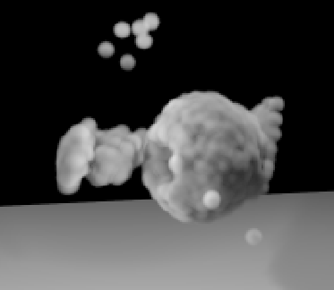
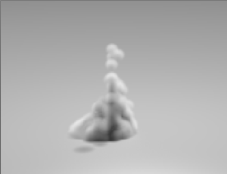

Thesis Simulating Snow with the Material Point Method
This thesis discusses the research and development steps for the simula-
tion of snow with the Material Point Method (MPM). In order to gain
an understanding in the technique and mathematics the MPM was re-
searched in detail. All ten steps of the MPM were implemented using
C++. First the method was implemented without the collision and im-
plicit update. Next the body-collision for the particles and grid nodes
were applied and last the semi-implicit update step was applied. The
goal of implementing and understanding all the steps of the MPM was
obtained. Test were done with snowballs: letting them drop, throwing
them against a wall and throwing a small snowball against a static big-
ger snowball. The two snowballs interacted and the big snowball was
pushed back by the small snowball while the small snowball also created
a hole in the big snowball. The collision worked correctly for the grid
nodes and particles. Finding the balance between the number of par-
ticles, their weight and the size of the grid nodes was challenging and
while this was improved the simulations improved too and became more
realistic. The results were not completely satisfactory yet and when the
snowball was dropped shear and velocity decrease was observed after a
few frames. This problem could not be solved within the available time.
Although the snow characteristics where not completely reached the La-
grangian particle and Euler grid implementation that is the basis of the
MPM method was succesfull.
 